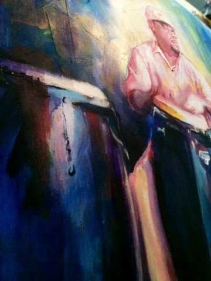
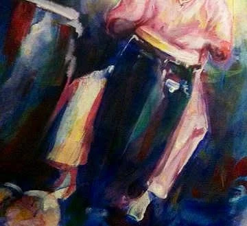
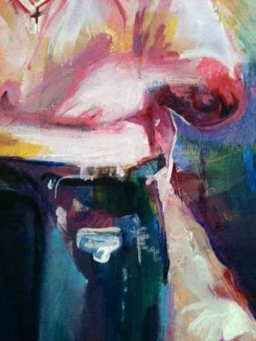

2014 · Painting process
The First Stages
The earliest photograph shows the loose canvas while the painting was still taking shape. The conga player and the surrounding colors were only beginning to emerge.
2014 · Later titled “Sacude Conguero”

Raymond “RayBoogie” Pizarro commissioned Alex Reynoso to paint him playing conga drums in 2014. Created in acrylic on loose, unstretched canvas, the portrait captures the energy of percussion through expressive color and movement.
When they met, Alex unrolled the finished canvas in front of Raymond, who was amazed. The work was originally untitled. On September 19, 2022, Raymond called it “Sacude Conguero.”
For percussionist Raymond “RayBoogie” Pizarro, the conga drums are more than a backdrop. They are part of the portrait’s pulse. Raymond followed the painting as it developed, from the first shapes on loose canvas to the detailing of his face and the drums.
2014 · The making of Sacude Conguero
Seven moments from the painting process, followed by Raymond's reaction and the painting's later appearance.
2014 · Painting process
The earliest photograph shows the loose canvas while the painting was still taking shape. The conga player and the surrounding colors were only beginning to emerge.

2014 · Painting process
More of the figure, drums and surrounding color come together. The painting is still in progress, with areas left open for further work.

2014 · Painting process
The drums begin to gain their shape and presence. Their curved forms give the portrait its rhythm even before the smaller details are added.

2014 · Painting process
A closer look at Raymond's face during the detailing stage. The ear and surrounding features are still being developed, making this a record of the process rather than the finished portrait.

2014 · Painting process
This broader view captures the painting at the same developing stage as the face detail. Brushwork and color continue to build across the portrait and congas.

2014 · Painting process
A close view of the expressive acrylic marks and overlapping color that carry movement through the painting.

2014 · Painting process
The portrait and congas are seen in closer detail as the image approaches its finished form.
A closer look · The conga drums
The portrait is as much about the congas as the person playing them. Across these close-ups, curved drum shells, reflections, hands and overlapping strokes of color bring the instrument into focus.



2014 · Raymond's reaction
Raymond's response became part of the painting's story. He also shared the portrait with his own audience, writing, “Portrait of me by Alexander Reynoso. The man is a talented artist. Mad props to you bro!!!!!”
September 2022 · Hispanic Heritage Month
Eight years later, Raymond showcased the painting in photographs and a short video for Hispanic Heritage Month. He suggested guaguancó music to accompany it.
On September 19, 2022, Raymond gave the previously untitled painting its name: Sacude Conguero.
The conversation continues
What People Saw
Friends and viewers responded to the painting's colors, energy and subject.
See the original Facebook post and comments